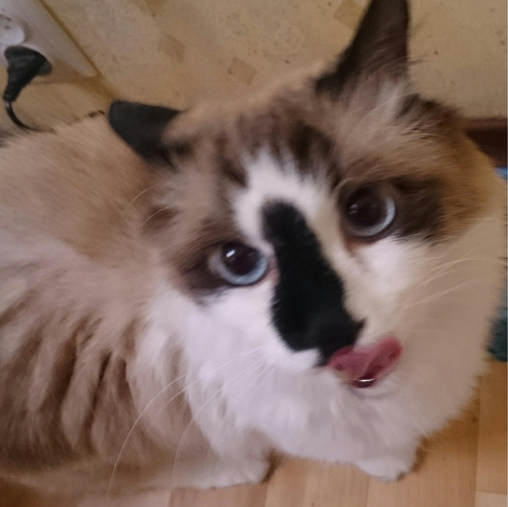

Чепикова Алиса Юрьевна
О себе:
Мне 19 и я очень не люблю говорить о себе, зато очень люблю своего кота, вот он на фотографии, можете полюбоваться. Учусь в ДВФУ, на направлении математика и компьютерные науки и почему-то никто не верит, что мы существуем. Каждый день засыпаю и просыпаюсь с надеждой и верой(без любви), что аналитическую геометрию будет вести не Чеканов. Иногда фотографирую на плёночный фотоаппарат, надеюсь, однажды руки дойдут накопить на ломо л-ка.
Я очень люблю животных и могу расплакаться из-за них! Это мой дар и мое проклятие так скажем. Люблю старые фильмы(и не только фильмы), Тарковского, например. А ещё я иногда играю на укулеле. У меня есть золотая медаль и зелёные волосы.
Мои увлечения:
Так как поступив в вуз у меня не осталось ни увлечений, ни интересов(тем более времени на них), вот лучше список моих любимых музыкальных жанров:
- coldwave
- post-punk
- dream pop
- shoegaze
- screamo
- synthpop
- darkwave
- new wave